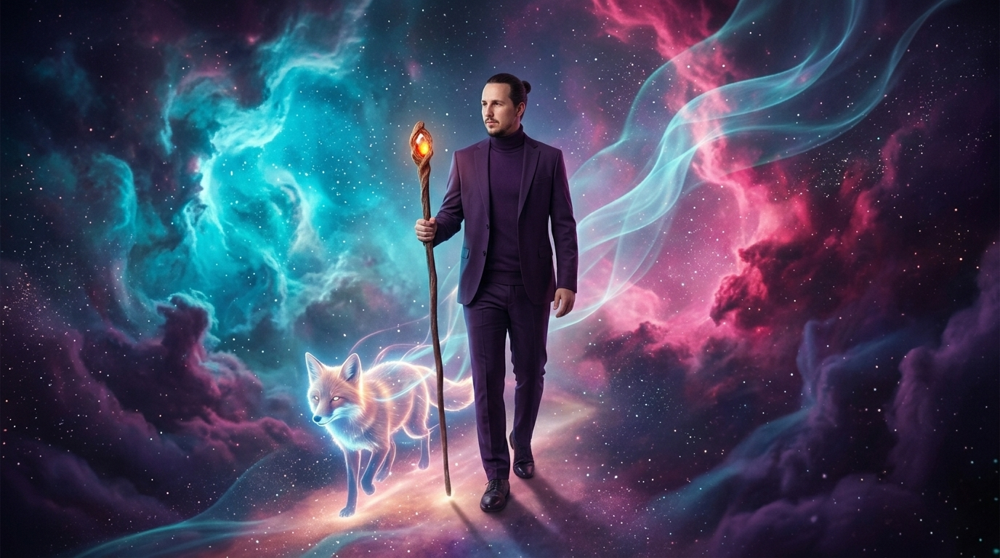
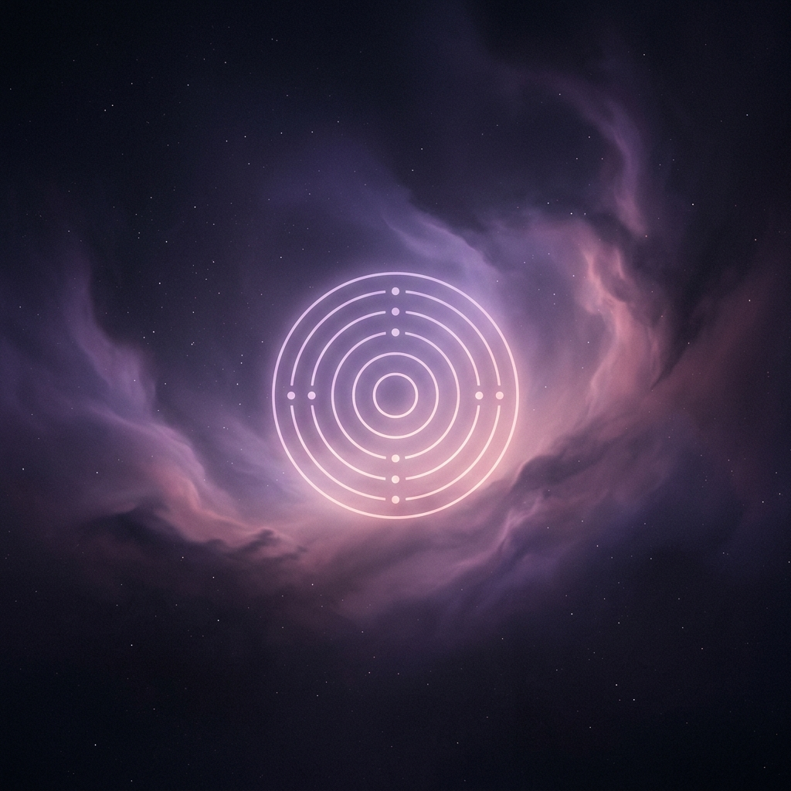
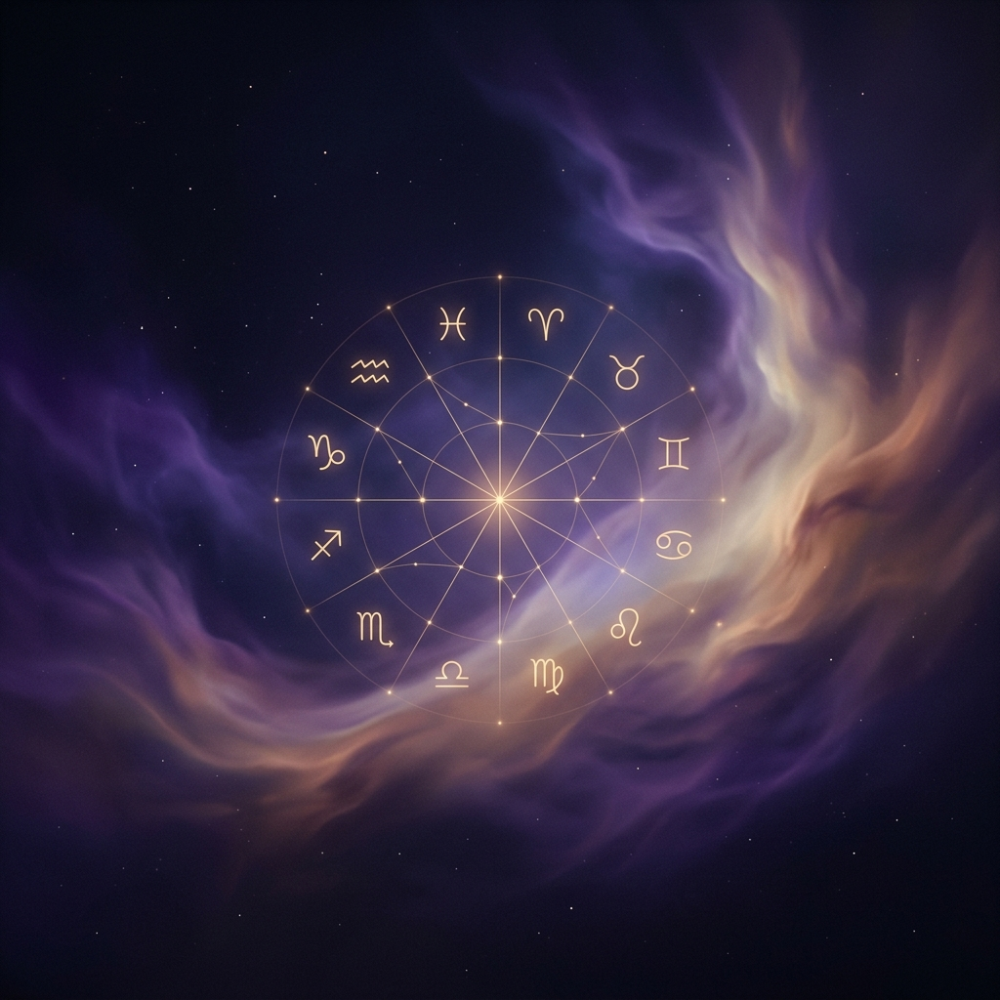

Der Pfad der Menschen
Jeder Heilungsweg ist individuell. Meine Begleitung für Menschen richtet sich an all jene, die spüren, dass sie bereit sind, alte Schichten abzulegen, neue Klarheit zu finden und sich auf schamanische oder ebenen-übergreifende Heilungsansätze einzulassen.
Schamanische Sitzung (Präsenz / Online)
Energie ist nicht an Raum oder Zeit gebunden. In einer schamanischen Sitzung reise ich in das unsichtbare Feld, um tiefliegende Blockaden zu lösen, verlorene Seelenanteile zurückzuholen oder alte Verstrickungen zu trennen.

Schamanische Fernbehandlung
Tiefe energetische Blockadenlösung, ganz ohne Präsenz oder Termin. Du buchst die Behandlung, nennst mir dein Thema, und ich wirke für dich im Feld, während du deinen normalen Alltag lebst. Das Ergebnis erhältst du per Sprachnachricht.

Hypnotische Begleitung
Ein tiefer, entspannter Trance-Zustand ermöglicht es uns, mit deinem Unterbewusstsein in Dialog zu treten. Sehr effektiv bei der Umprogrammierung alter Glaubensmuster, dem Überwinden von Ängsten oder der Stressbewältigung auf tiefer Ebene.

Schamanische Kinderbegleitung
Besonders sensible, spirituelle oder hochreagible Kinder (z.B. Sternenkinder, Kristallkinder) profitieren oft enorm von einer altersgerechten, sanften energetischen Begleitung. Eine behutsame Stärkung ihrer feinen Antennen ohne Überforderung.

Schamanisches Sternzeichen Orakel
Blicke in die Sterne und erkenne deine aktuellen energetischen Tendenzen. Ein persönliches Orakel für Führung und Inspiration.
Begleitung in Krisenzeiten
Ich biete dir Begleitung auch in schweren und unsicheren Zeiten an – mit Ruhe, Sanftheit und der Kraft meiner Spirits.
Ob du gerade durch eine belastende Lebensphase gehst, innere Blockaden spürst oder eine Zeit des Umbruchs erlebst: Ich halte für dich einen geschützten Raum, in dem Verbindung, innere Ruhe und energetische Unterstützung entstehen dürfen.
Häufige Fragen (FAQ)
Überhaupt nicht. Offenheit und die Bereitschaft, hinzusehen, reichen völlig aus. Die energetische Arbeit wirkt unabhängig von deinem Glauben oder Vorwissen.
Wir klären dein Anliegen, danach wechsle ich in einen entspannten, tiefen Trance-Zustand. Ich arbeite in deinem Energiefeld – z.B. hole ich abgespaltene Seelenanteile zurück oder trenne alte karmische Verbindungen, während du dich einfach nur entspannst.
Absolut. Du bist während der Hypnose jederzeit handlungsfähig und entspannst dich lediglich sehr tief, um deinem Unterbewusstsein den Weg freizumachen. Danach bist du frisch und klar im Hier und Jetzt.
Ja, Energie ist nicht an Zeit und Raum gebunden. Ich reise im morphogenetischen Feld, weshalb die Heilarbeit auf Distanz absolut gleichwertig und genauso effektiv ist wie eine Begegnung in meiner Praxis.